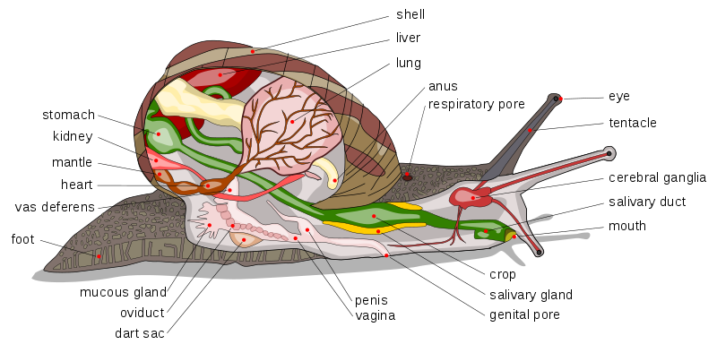

Melcul de Livada, cunoscut si cu numele stiintific de Helix Pomatia, face parte din clasa Gastropode, in increngatura Mollusca. Este raspandit in Europa cu exceptia extremitatilor nordice, traieste in arbusti si se hraneste cu iarba si plante mici.
El este format dintr-un cap cu patru tentacule, dintre care doua mai lungi si care contin ochii. El are o limba zimtata cu care sfasie hrana, si simturile foarte dezvoltate din cauza deplasarii incete. El mai are un sistem digestiv, sistem respirator si sistem circulator dar are si functii pentru locomotie, sensibilitate si reproducere (aici putem observa toate functiile pentru prima oara). El este hermafrodit, deci are ambele glande sexuale, si poate sa se reproduca cu orice melc si se reproduce folosind oua pe care le depune si formeaza melci complet dezvoltati in trei saptamani.
El este folosit in numeroase parti ale globului in domeniul culinar (se serveste cu patrunjel), in industria farmaceutica pentru tratarea anumitor boli si in extragerea leptinei. Este considerat un produs de export.